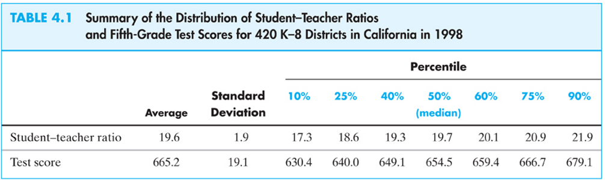

Ce semestre j’assure quelques travaux dirigés dont l’objectif est de familiariser les étudiants avec un outil de traitement des données Stata. C’est un logiciel que j’ai utilisé longtemps avant de passer à R. Je milite d’ailleurs activement pour que les enseignements de ce type fassent plus de places aux logiciels gratuits que les étudiants peuvent librement pratiquer chez-eux (R ou même Python). En attendant, je réplique son R ici les travaux demandés en ajoutant quelques éléments notamment l’importation des tableaux assemblés dans un fichier .docx (Word).
Je prend l’option ici de détailler les choses par travaux demandés selon les séances. Commençons donc par la première qui est centrée sur les statistiques descriptives.

Il s’agit d’utiliser les données STAR qui portent sur les résultats aux California Standardized Testing and Reporting dataset que l’on peut télécharger ici.
Copiez-le dans votre environnement de travail. Il s’agit maintenant l’importer dans R. Pour cela, compte tenu du format du fichier qui est spécifique à Stata, il va nous falloir utiliser le package haven. Si vous ne l’avez pas déjà installer, faîtes-le. Nous utiliserons également l’habituel tidyverse de même que le package gt qui permet d’assembler des tableaux à partir d’une syntaxe simple (proche de celle de ggplot).
Commençons donc par les charger dans notre session.
library(tidyverse)
library(haven)
library(gt)Utilisons la fonction read_dta() pour chager les données. Nommons la data frame générée caschool.
caschool <- read_dta("caschool.dta")Limitons la base aux deux variables décrites dans le tableau (dans la base str et testscr).
variables <- caschool %>% select(str,testscr)Ceci fait, il nous reste à générer les statistiques. Pour ce faire, nous pourrions simplement utilisez summary().
summary(variables)## str testscr
## Min. :14.00 Min. :605.5
## 1st Qu.:18.58 1st Qu.:640.0
## Median :19.72 Median :654.5
## Mean :19.64 Mean :654.2
## 3rd Qu.:20.87 3rd Qu.:666.7
## Max. :25.80 Max. :706.8Cependant, la fonction ne donne pas l’ensemble des statistiques désirées. Par ailleurs, elle n’inclut pas d’options permettons de les intégrer simplement. Reportons-nous sur une solution plus flexible offerte par le tydyverse (par dplyr), la fonction summarise() et plus précisément sa variante summarize-at().
Celle-ci présente deux options principales .vars et .funs. La première appel un vecteur contenant les noms de variables mobilisées. La seconde une liste des fonctions qui seront appliquées à ces variables. Pour commencer, limitons-nous à la seule moyenne. summarise_at() génere une tibble qui est une forme de data frame.
variables %>% summarise_at(
.vars=c("testscr","str"),
.funs= list(~mean(.)))## # A tibble: 1 × 2
## testscr str
## <dbl> <dbl>
## 1 654. 19.6summarise_at() génere une tibble qui est une forme de data frame. Notez la syntaxe particulière de la liste de fonction avec le ~ qui annonce le nom de la fonction et le . qui indique que l’on reprend les variables indiquées plus haut.
Mettons l’ensemble en colonne en passant la tibble en vecteur et en transformant l’ensemble en une matrice deux lignes, une colonne. Nous pourrions faire les choses plus simplement à ce stade en utilisant la fonction transpose t() par exemple. Cependant, ce surplus de complexité nous permettra de rendre l’ensemble plus flexible.
variables %>% summarise_at(
.vars=c("testscr","str"),
.funs= list(~mean(.))) %>%
unlist() %>% matrix(nrow =2 ,ncol=1)## [,1]
## [1,] 654.15655
## [2,] 19.64043Le tableau est dans le bon sens. C’est déjà ça… reste qu’il est peu lisible. Ajoutons des étiquettes aux variables. Commençons par créer un vecteur les incluant.
labels<-c('Student-teacher ratio','Test score')Limitons les valeurs à une décimal. Puis transformons l’ensemble en data frame avec une première colonne indiquant le nom des variables.
variables %>% summarise_at(
.vars=c("testscr","str"),
.funs= list(~mean(.))) %>%
unlist() %>% matrix(nrow =2 ,ncol=1) %>%
round(digits=1) %>%
data.frame(labels,.)## labels .
## 1 Student-teacher ratio 654.2
## 2 Test score 19.6Ajoutons l’indication de la statistique représentée simplement avec colnames().
tab<-variables %>% summarise_at(
.vars=c("testscr","str"),
.funs= list(~mean(.))) %>%
unlist() %>% matrix(nrow =2 ,ncol=1) %>%
round(digits=1) %>%
data.frame(labels,.)
colnames(tab)<-c(' ','Average')
tab## Average
## 1 Student-teacher ratio 654.2
## 2 Test score 19.6La structure du tableau est bonne. Il ne nous reste plus qu’à intégrer les autres statistiques avec les fonctions correspondant sd() pour l’écart type, quantile() en indiquant la proportion d’observations considéré (avec l’option probs) et median() pour le quantile à 0,5. Ce faisant nous ajustons le nombre de colonne qui passe de 1 à 9 et allongeons la liste des noms de statistique reprise pour les colonnes. Profitons en pour nommer la data frame générée tab. Cela nous permettra de la mobiliser par la suite de manière obtenir un tableau mis en forme.
tab<-variables %>% summarise_at(
.vars=c("testscr","str"),
.funs= list(~mean(.),~sd(.),~quantile(.,probs=.1),
~quantile(.,probs=.25),~quantile(.,probs=.4),
~median(.),~quantile(.,probs=.6),~quantile(.,probs=.75),
~quantile(.,probs=.9))) %>%
unlist() %>% matrix(nrow =2 ,ncol=9) %>%
round(digits=1) %>%
data.frame(labels,.)
colnames(tab)<-c(' ','Average','Standard Deviation',
'10%','25%','40%','50% (median)','60%','75%','90%')
tab## Average Standard Deviation 10% 25% 40%
## 1 Student-teacher ratio 654.2 19.1 630.4 640.0 649.1
## 2 Test score 19.6 1.9 17.3 18.6 19.3
## 50% (median) 60% 75% 90%
## 1 654.4 659.4 666.7 678.9
## 2 19.7 20.1 20.9 21.9C’est à ce stade que le package gt entre en scène. La fonction gt() permet d’obtenir une version image du tableau.
gt(tab)| Average | Standard Deviation | 10% | 25% | 40% | 50% (median) | 60% | 75% | 90% | |
|---|---|---|---|---|---|---|---|---|---|
| Student-teacher ratio | 654.2 | 19.1 | 630.4 | 640.0 | 649.1 | 654.4 | 659.4 | 666.7 | 678.9 |
| Test score | 19.6 | 1.9 | 17.3 | 18.6 | 19.3 | 19.7 | 20.1 | 20.9 | 21.9 |
Modifions cette image pour intégrer le titre ainsi qu’une étiquette étendue pour les différents percentiles reportés.
tab<-gt(tab) %>%
tab_header(title='Summary of the distribution of Student-Teacher Ratios and
Fifth-Grade Test Score for 420 K-8 Districts in California in 1998') %>% tab_spanner(label = "Percentiles",
columns = c('10%','25%','40%','50% (median)','60%','75%','90%'))
tab| Summary of the distribution of Student-Teacher Ratios and Fifth-Grade Test Score for 420 K-8 Districts in California in 1998 | |||||||||
| Average | Standard Deviation | Percentiles | |||||||
|---|---|---|---|---|---|---|---|---|---|
| 10% | 25% | 40% | 50% (median) | 60% | 75% | 90% | |||
| Student-teacher ratio | 654.2 | 19.1 | 630.4 | 640.0 | 649.1 | 654.4 | 659.4 | 666.7 | 678.9 |
| Test score | 19.6 | 1.9 | 17.3 | 18.6 | 19.3 | 19.7 | 20.1 | 20.9 | 21.9 |
Il ne nous reste plus qu’à exporter le résultat dans Word en créant un fichier .docx grâce à la fonction gtsave(). Vous pourrez alors continuer la mise en forme (couleur, gras, italic, police de caractère…).
tab %>% gtsave("tab_1.docx")La fonction permet de générer différents types de fichier (.rtf,.tex,.ltx,.html,.docs).
Il n’y a pas dans R base de fonction dédiée à ces statistiques. Nous pourrions en écrire mais le plus simple est d’utiliser le package moments. Installez-le / chargez-le.
library(moments)On a alors accès aux fonctions skewness() et kurtosis() que l’on peut intégrer dans notre tableau. Celui-ci aura 11 colonnes. Plaçons les après l’écart type.
tab<-variables %>% summarise_at(
.vars=c("testscr","str"),
.funs= list(~mean(.),~sd(.),~skewness(.),~kurtosis(.),~quantile(.,probs=.1),
~quantile(.,probs=.25),~quantile(.,probs=.4),
~median(.),~quantile(.,probs=.6),~quantile(.,probs=.75),
~quantile(.,probs=.9))) %>%
unlist() %>% matrix(nrow =2 ,ncol=11) %>%
round(digits=1) %>%
data.frame(labels,.)
colnames(tab)<-c(' ','Average','Standard Deviation','Skewness','Kurtosis',
'10%','25%','40%','50% (median)','60%','75%','90%')
tab<-gt(tab) %>%
tab_header(title='Summary of the distribution of Student-Teacher Ratios
and Fifth-Grade Test Score for 420 K-8 Districts in California in 1998') %>%
tab_spanner(label = "Percentiles",
columns = c('10%','25%','40%','50% (median)','60%','75%','90%'))
tab| Summary of the distribution of Student-Teacher Ratios and Fifth-Grade Test Score for 420 K-8 Districts in California in 1998 | |||||||||||
| Average | Standard Deviation | Skewness | Kurtosis | Percentiles | |||||||
|---|---|---|---|---|---|---|---|---|---|---|---|
| 10% | 25% | 40% | 50% (median) | 60% | 75% | 90% | |||||
| Student-teacher ratio | 654.2 | 19.1 | 0.1 | 2.7 | 630.4 | 640.0 | 649.1 | 654.4 | 659.4 | 666.7 | 678.9 |
| Test score | 19.6 | 1.9 | 0.0 | 3.6 | 17.3 | 18.6 | 19.3 | 19.7 | 20.1 | 20.9 | 21.9 |
Comme avec le précédent, on peut simplement l’envoyer dans un document Word.
tab %>% gtsave("tab_2.docx")Chargeons les nouvelles données pour commencer. Le fichier .dta est disponible ici. Copiez le dans votre dossier de travail et charger les données dans R.
portf_size<-read_dta("portf_size.dta")Réduisons la base aux seules variables qui nous intéressent et générons un vecteur qui les nomment.
variables<-portf_size %>% select(Lo10,Hi10)
labels<-c('Small','Big')On peut alors reprendre notre programme et l’adapter pour à nos nouvelles données.
tab<-variables%>% summarise_at(
.vars=c("Lo10","Hi10"),
.funs= list(~mean(.),~sd(.),~skewness(.),~kurtosis(.),~quantile(.,probs=.1),
~quantile(.,probs=.25),~quantile(.,probs=.4),
~median(.),~quantile(.,probs=.6),~quantile(.,probs=.75),
~quantile(.,probs=.9))) %>%
unlist() %>% matrix(nrow =2 ,ncol=11) %>%
round(digits=2) %>%
data.frame(labels,.)
colnames(tab)<-c(' ','Average','Standard Deviation','Skewness','Kurtosis',
'10%','25%','40%','50% (median)','60%','75%','90%')
tab<-gt(tab) %>%
tab_header(title='') %>%
tab_spanner(label = "Percentiles",
columns = c('10%','25%','40%','50% (median)','60%','75%','90%'))
tab| Average | Standard Deviation | Skewness | Kurtosis | Percentiles | |||||||
|---|---|---|---|---|---|---|---|---|---|---|---|
| 10% | 25% | 40% | 50% (median) | 60% | 75% | 90% | |||||
| Small | 1.76 | 10.61 | 4.40 | 46.82 | -7.32 | -2.72 | -0.25 | 1.04 | 2.41 | 4.92 | 9.94 |
| Big | 0.90 | 5.39 | 0.23 | 10.65 | -4.83 | -1.68 | 0.19 | 1.15 | 2.02 | 3.83 | 6.20 |
Le résultat on peut alors comme précédemment simplement l’envoyer dans un document Word.
tab %>% gtsave("tab_3.docx")